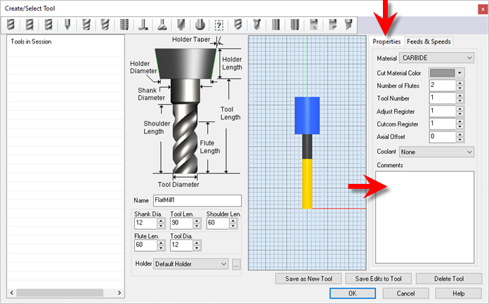
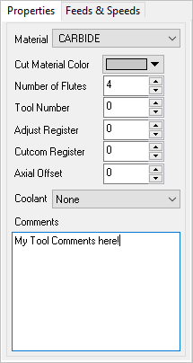
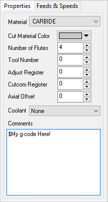

You can add comments associated with a Tool. These Comments are saved with the Tool in your Tool Library. They are also posted to your g-code when the tool is used.
Here are the steps to add Comments to a Tool:
1.Edit the Tool using the Create/Select Tool dialog.
2.Select the Properties tab on the right.
 |
3.Add text to the Comments window.
 |
4.Make sure Comments are enabled in your post.
A.Click on Post (Set Post-Processor Options), then click Edit.
B.From the Post Processor Generator dialog, select the General tab from the left. C.Check the box to Output Comments. You can also change the start and end characters to use.
D.Then pick Save or Save As. |

5.Now post your operations and see your comments:
... ... G1 X0.5301 Y-0.7171 Z0.7480 G3 X0.7801 Y-0.4671 I0.0000 J0.2500 F2.6 G1 X0.7801 Y-0.2171 Z0.7480 F6.9 G0 Z0.9843 G0 X0.7801 Y-0.2171 (2 1/2 Axis Profiling) (My Tool Comments Here!) S18000 G0 Z0.9843 G0 X0.5301 Y-0.7097 G1 X0.5301 Y-0.7097 Z0.7480 F6.9 G1 X0.5873 Y-0.7097 Z0.7480 F3.4 G1 X0.5873 Y-0.6345 Z0.7480 G1 X0.4729 Y-0.6345 Z0.7480 ... ... |
6.If you want to post g-codes instead of comments, just place a $ character prior to the comment in the Create/Select Tools dialog. Adding $ as prefix will skip the comment start & end characters in the posted code.
 ... ... G1 X0.4655 Y-0.7171 Z0.7480 G1 X0.5301 Y-0.7171 Z0.7480 G3 X0.7801 Y-0.4671 I0.0000 J0.2500 F2.6 G1 X0.7801 Y-0.2171 Z0.7480 F6.9 G0 Z0.9843 G0 X0.7801 Y-0.2171 (2 1/2 Axis Profiling) My g-code Here! S18000 G0 Z0.9843 G0 X0.5301 Y-0.7097 G1 X0.5301 Y-0.7097 Z0.7480 F6.9 G1 X0.5873 Y-0.7097 Z0.7480 F3.4 G1 X0.5873 Y-0.6345 Z0.7480 ... ... |